Kulinari Indonesia
Indonesia kita memang terkenal akan tempat wisatanya yang seringkali dikunjungi oleh para wisatawan mancanegara. Tetapi, tidak hanya itu saja wisata kulinernya yang lezat ini ternyata juga sangat mendunia. Makanan khas Indonesia yang sangat terkenal dan kaya akan rempah-rempahnya ternyata sudah banyak dikenal oleh berbagai macam belahan negara. Dari Sabang sampai Merauke tentunya banyak sekali pilihan kuliner yang bisa kamu santap di negeri ini. Hal ini pun menyebabkan makanan Indonesia selalu tampil dalam ajang festival kuliner dunia karena hampir semua wisata kuliner Indonesia ini menggunakan rempah-rempah yang tidak bisa ditemukan di negara lain. Inilah sebabnya makanan Indonesia begitu banyak diminati dan memiliki khas tersendiri. Berikut beberapa makanan khas Indonesia.
1. Sambal
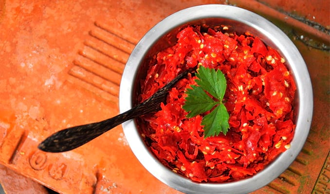Siapa yang tidak kenal sambal? Makanan khas Indonesia yang terbuat dari bahan dasar cabai ini bisa dibilang hampir selalu hadir di setiap waktu makan masyarakat Indonesia. Saat ini sambal telah memiliki berbagai varian rasa yang tercipta dari penggunaan bahan-bahan yang juga beragam. Pada dasarnya sambal terbuat dari cabai yang diulek sehingga mengeluarkan sari cabai yang pedas yang kemudian ditambah dengan bahan-bahan lain seperti garam dan terasi. Sambal khas Indonesia tak hanya dikenal dengan cita rasanya yang pedas dan nikmat, tetapi juga mempunyai konsistensi bahan yang lebih padat dan lebih banyak mengandung rempah-rempah. Ada berbagai macam sambal di Indonesia, seperti sambal asam, sambal bajak, sambal lado, sambal tempoyak [dari Bengkulu], sambal terasi, sambal kecap, sambal manis, sambal tomat, sambal pencit, sambal korek, sambal udang, sambal jeruk, sambal petis, sambal setan, dan masih banyak lagi macam-macam sambal khas dari berbagai daerah di Indonesia.
2. Sate

Sate adalah makanan khas Indonesia yang populer di dunia yang secara umum dibuat dari bahan dasar daging ayam atau sapi yang dipotong-potong untuk kemudian ditusuk dengan lidi. Setelah potongan daging berjejer rapi dalam tiap tusukan, masing-masing tusukan berikutnya dibakar hingga matang. Sama seperti sambal, sate adalah makanan khas Indonesia yang terdiri dari berbagai macam varian, bisa dari daging yang dipilih, bahan yang dipakai untuk bumbu, hingga tusukan yang digunakan. Daging yang biasa dipilih untuk dijadikan sate antara lain daging ayam, kambing, sapi, domba, kelinci, babi, kuda, dan lain-lain. Di Indonesia sendiri ada sate asal daerah yang sudah menyebar hingga ke banyak kota, seperti sate padang yang merupakan makanan asal Sumatera Barat. Selain sate padang, masih ada sate-sate enak dan unik lain, seperti sate languan, sate lilit, sate pentul, sate plecing, sate lokan, sate maranggi, sate buntel [asal Jogja], sate pencok [asal Lombok, dan sate-sate lainnya.
3. Soto
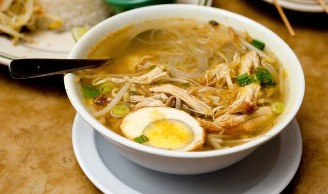Soto adalah kuliner khas nusantara berupa hidangan berkuah yang terbuat dari kaldu daging dan sayuran. Ada dua jenis soto yang populer di Indonesia, yakni soto ayam atau daging dan soto mie. Selain dua jenis itu, sebenarnya masih banyak jenis soto yang juga enak dan menggugah selera, sebut saja soto padang, madura, soto babat, soto kambing, soto banjar, soto medan, dan masih banyak lagi. Pemberian nama soto biasanya merujuk pada daerah asalnya ataupun komposisi bahan yang digunakan. Setiap jenis soto mempunyai cara penyajian yang berbeda-bebeda sesuai kekhasan di setiap daerah. Soto bisa dihidangkan sendiri atau langsung dimakan tanpa tambahan maupun dengan tambahan seperti nasi, lontong, ketupat, bihun, atau mie bersama dengan lauk isiannya. Ada juga menu pelengkap seperti kerupuk, emping, perkedel, telur puyuh, sate, koya, dan sambal. Di sejumlah kota, seperti Jakarta, ada banyak warung penjual soto. Bukan cuma soto betawi yang dijual, tetapi ada juga warung yang khusus menjajakan soto dari daerah-daerah luar Jakarta.
4. Nasi Goreng

Belum diketahui secara pasti dari mana asal nasi goreng karena selain di Indonesia, nasi goreng juga banyak dijumpai di negara-negara lain. Oleh karena itu, untuk menjadikan nasi goreng sebagai makanan khas Indonesia, masyarakat membuat nasi goreng dengan membawa ciri khas kuliner nusantara, yakni banyak rempah. Bicara mengenai rasa, sudah pasti nasi goreng asal Indonesia mempunyai cita rasa yang juara dan boleh diadu dengan nasi goreng asal negara-negara lain. Nasi goreng sendiri adalah makanan berupa nasi yang digoreng bersama kecap dan bumbu lain yang kemudian diaduk-aduk sampai nasi berubah menjadi kecokelatan sebagai tanda kecap telah meresap dan menyebar ke semua nasi. Setelah nasi selesai digoreng, nasi kemudian dituang dalam selembar piring. Untuk memberikan kekayaan rasa, biasanya nasi ditambah dengan isian seperti telur, ayam, kerupuk, irisan mentimun, irisan sosis, ikan asin, dan masih banyak lagi, tergantung selera.
5. Nasi Padang

Indonesia mempuyai kekayaan kuliner yang sangat melimpah, dari bagian barat hingga timurnya. Seperti di Sumatera Barat, tepatnya di Padang, ada sajian nasi yang begitu legendaris dan telah melanglang buana hingga ke kota-kota lain, bahkan ke luar negara. Nasi padang bisa dibilang sebagai nasi yang disukai oleh 90% penduduk Indonesia. Cita rasa yang nikmat dan begitu khas membuat nasi padang selalu mendapatkan tempat terbaik di hati para pecintanya. Mengulas tentang nasi padang maka tak hanya berbicara soal nasi, tetapi juga seluruh lauk pauknya yang rasanya terkenal pedas dan bersantan. Ada berbagai pilihan lauk yang bisa dipilih pada makanan khas Indonesia yang berasal dari Sumatera Barat ini. Mulai dari yang paling umum seperti ayam bakar, ayamg goreng, ikan bakar, ikan goreng, hingga lauk pauk yang juga berasal dari tanah Sumatera, seperti rendang yang paling ternama.
6. Bakmi
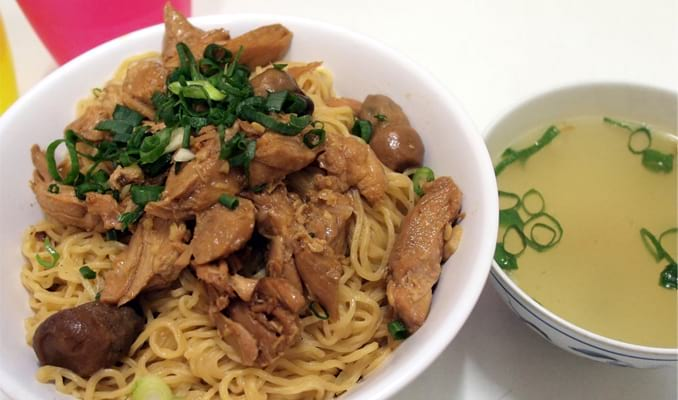Pesatnya persebaran warga Tionghoa ke negara-negara Asia Tenggara, seperti Indonesia, menimbulkan pengaruh tersendiri dalam berbagai aspek di negara tersebut, seperti kulinernya. Di Indonesia terdapat makanan khas yang dibawa oleh pedagang-pedagang Tiongkok, yakni bakmi. Bakmi atau yamien atau yahun adalah makanan yang telah menyatu ke dalam jantung perkulineran Indonesia. Saat ini bakmi telah diolah dengan bumbu khas nusantara beserta bahan-bahan yang juga mudah ditemui di Indonesia, seperti ayam dan sayuran sawi. Bakmi sendiri dibuat dari bahan utama tepung terigu atau bakmi kuning. Penyajian bakmi biasa dilakukan dalam mangkuk bersama isian, kuah, dan tak lupa sambalnya. Sebagai negara dengan penduduk yang kreatif, bakmi sekarang bisa ditemukan dalam dua bentuk, yakni bakmi kuah dan bakmi goreng.
7. Rawon
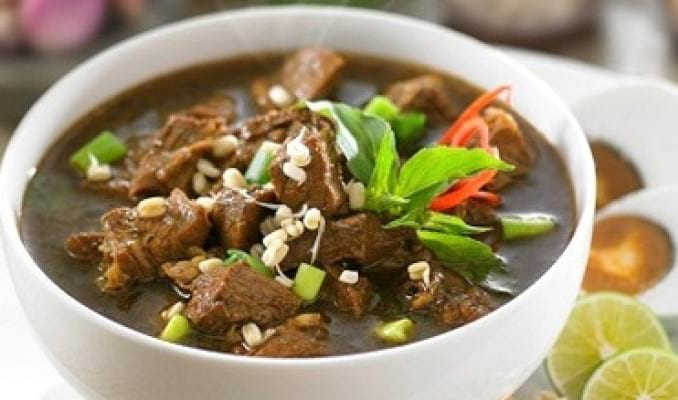Rawon adalah menu masakan tradisional khas Indonesia andalan penduduk Jawa Timur yang mempunyai banyak sekali penggemar. Hidangan tradisional bernama rawon ini mempunyai bentuk seperti sup daging dengan kuah yang berwarna cokelat pekat cenderung hitam. Warna kuah pada rawon dihasilkan dari penggunaan bumbu bernama kluwak. Rawon dimasak dengan bumbu rempah yang cukup berbeda dengan masakan-masakan Indonesia lain sehingga selain menciptakan rasa yang khas, aroma yang dimiliki dari rawon juga sangat menggugah selera. Rawon yang merupakan ikon kuliner di Jawa Timur biasa disajikan bersama nasi hangat yang dilengkai dengan rebusan tauge. Untuk menambah kesedapannya, tak jarang orang menambahkan daun bawang, sambal, dan perasan jeruk nipis ke dalamny
8. Opor Ayam
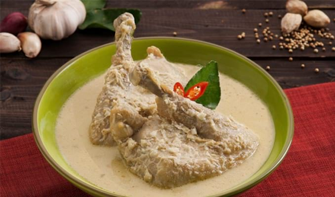Pada menjelang hari raya lebaran atau Idul Fitri, masyarakat Indonesia, terutama yang beragama Islam, berbondong-bondong menyiapkan sajian untuk tamu yang hendak berkunjung ke rumah untuk bersilaturahim dan bermaaf-maafan. Salah satu sajian yang umum dibuat adalah opor ayam. Opor ayam menjadi makanan khas Indonesia yang dipilih karena bisa dikatakan menjadi sebuah tradisi dalam masyarakat Muslim di Indonesia. Opor ayam adalah makanan yang diklaim berasal dari kawasan Jawa Tengah dan Jawa Timur bagian barat. Olahan ayam ini menyajikan ayam yang direbus dengan bumbu kental dari santan bersama tambahan bumbu lain seperti serai, kencur, dan lainnya. Penyajian opor ayam biasa dilakukan dengan ketupat atau lontong, bahkan ada juga yang memakan opor bersama nasi. Tak lupa sebelum menyantap opor ayam orang-orang biasanya menambahkan sambal goreng.
9. Gulai
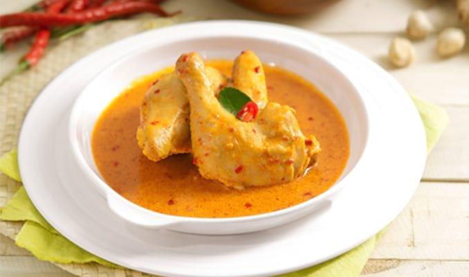Gulai merupakan hidangan berat berbahan utama [yang paling umum] daging ayam. Selain daging ayam, tak jarang dipilih daging hewan lain seperti ikan, kambing, dan sapi untuk membuat gulai. Bahkan, ada juga gulai yang menghidangkan beberapa macam sayuran seperti daun singkong dan nangka muda. Menurut catatan sejarah, gulai adalah makanan khas Indonesia yang berasal dari Sumatera karena dari bumbu dan tampilannya memang identik dengan Pulau Emas. Bahan baku untuk membuat gulai adalah daging hewan atau sayuran yang diberi bumbu khusus berupa bumbu gulai yang terdiri dari banyak sekali rempah seperti kunyit, bawang putih, bawang merah, cabai merah, lengkuas, jahe, lada, ketumbar, serai, adas, pala, kayu manis, dan jintan. Semua bumbu rempah tersebut dihaluskan dan dimasak dalam santan. Gulai yang sudah jadi tampilannya mirip dengan kari yang banyak ditemukan di India. Tapi soal rasa, gulai jelas lebih enak.
10. Asinan
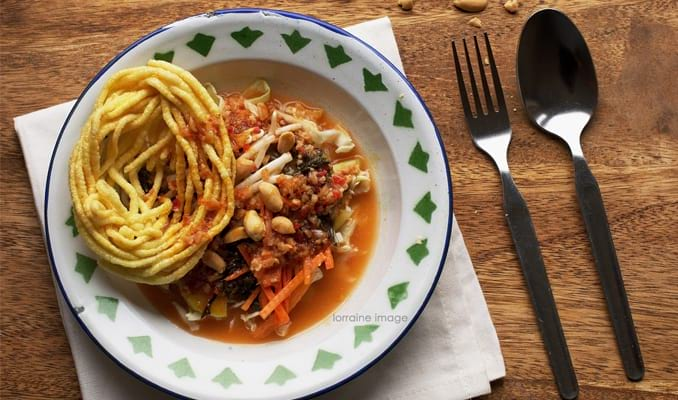Asinan adalah ikon kuliner khas Indonesia yang terkenal di mata dunia. Proses pembuatan yang unik menjadikan asinan semakin tersohor namanya. Asinan sendiri merupakan makanan yang dibuat melewati proses pengasaman dengan cuka atau pengasinan dengan garam pada acar [bisa berupa buah-buahan atau sayur-sayuran]. Di Indonesia terdapat dua macam asinan yang legendaris, yakni asinan betawi dan asinan bogor. Asinan betawi sangat terkenal di Jakarta hingga daerah sekitarnya. Asinan dari suku Betawi adalah asinan yang menggunakan sayur-sayuran sebagai acar yang diasinkan. Sayuran yang biasa diasinkan antara lain sawi, kubis, selada, taoge, dan tahu. Sementara asinan bogor adalah asinan buah-buahan. Buah yang dipilih untuk membuat asinan bogor adalah berbagai jenis buah-buahan tropis seperti mangga muda, pepaya, kedondong, bengkoang, nanas, dan jambu air.
11. Pepes
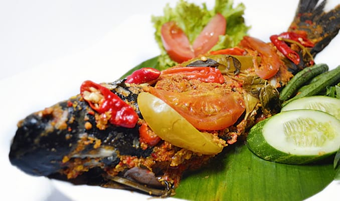Jika kamu adalah penduduk Indonesia yang tinggal di luar pulau Jawa, maka sempatkan diri untuk mendatangi pulau Jawa setidaknya satu kali seumur hidup. Banyak sekali makanan yang menunggu untuk kamu cicip selagi berada di Jawa. Rata-rata makanan khas Indonesia yang lahir di tanah Jawa berbentuk tradisional, seperti pepes misalnya. Apa itu? Pepes atau pais adalah cara memasak bahan baku khas Jawa Barat. Bahan yang biasa dipepes adalah ikan dan ayam, meskipun ada juga bahan makanan lain seperti jamur, tahu, dan masih banyak lagi yang dimasak dengan cara memepesnya. Bahan makanan tersebut akan dipepes dengan cara membungkusnya dengan daun pisang, Bumbu yang digunakan untuk pepes juga khas, yakni daun kemangi, tomat, dan cabai. Setelah bumbu dan bahan makanan dibungkus pakai daun pisang, proses berikutnya adalah membakar bungkusan ke atas api hingga matang dan mengering.
12. Pempek
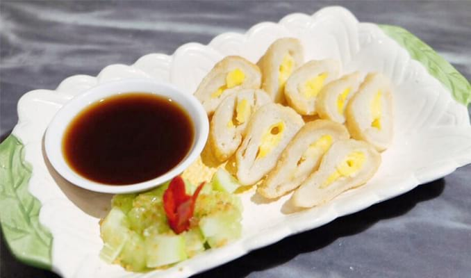Pempek adalah makanan yang berasal dari Palembang. Selain di Palembang, pempek juga bisa ditemui di Bangka dan semua daerah di Sumatear Selatan lainnya. Pempek atau empek-empek terbuat dari komposisi bahan utama berupa daging ikan dan tepung kanji [bukan tepung sagu]. Selain dua bahan utama tersebut, ada juga komposisi lain yang menyertai seperti telur, bawang putih, penyedap rasa, dan garam. Di kota-kota besar selain Palembang, para pedagang pempek juga bisa ditemui dan jumlahnya sangat banyak. Bahkan, selain dijual oleh pedagang kecil-kecilan, pempek juga banyak disajikan di restoran. Cita rasa yang lezat dan khas dari pempek memang bukan hanya sebatas menggoyang lidah, tetapi juga bisa bikin siapa pun ketagihan setelah memakannya.
13. Perkedel
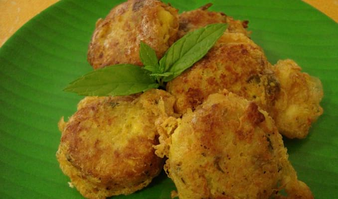Penduduk Indonesia sangat kreatif dalam mengolah bahan makanan. Sebut saja perkedel, makanan khas Indonesia ini juga terbilang unik karena hanya menggunakan bahan utama berupa kentang yang direbus. Saat ini perkedel telah dimodifikasi dengan memberikan campuran bahan lain, seperti daging cincang. Perkedel mempunyai bentuk bulat dan ukurannya kecil-kecil. Tekstur lembut dari perkedel dan rasanya yang enak menjadikan makanan khas Indonesia ini juga tak pernah kehabisan penggemar. Selain singkong, perkedel juga bisa dibuat dari ubi jala dan singkong. Bahkan ada juga orang yang membuat perkedel dari tahu yang dilumatkan. Meskipun bahan-bahannya bisa berbeda, proses pembuatan perkedel sama. Bahan utama perkedel dilumat dan dicampur dengan bumbu-bumbu lain. Setelah itu adonan perkedel dibentuk bulat dan digoreng hingga matang sebelum makanan khas Indonesia dari singkong ini disajikan.
14. Sayur Asem
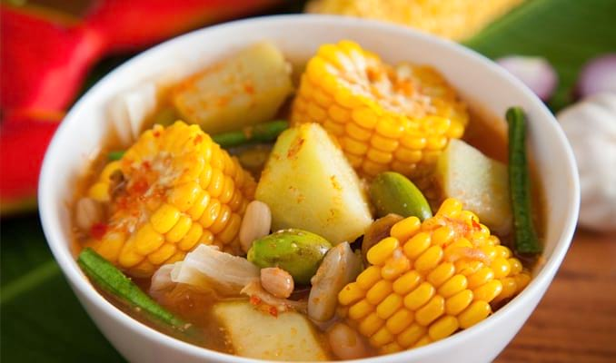Pernah mendengar makanan asal Thailand yang bernama Tom Yum? Hidangan berkuah segar yang berisikan produk laut tersebut ternyata juga bisa kamu temui di Indonesia dengan versi bahan yang kental dengan ciri khas masakan nusantara. Sayur asam namanya. Sayur asam atau sayur asem adalah makanan berkuah yang menghidangkan beberapa macam sayuran. Sayuran yang umum digunakan antara lain kacang panjang, kacang tanah, melinjo, nangka muda, labu siam, dan jagung. Seperti namanya, makanan khas Indonesia berjenis sayur satu ini juga menawarkan cita rasa yang asam menyegarkan. Sayur asem biasa dimakan dengan nasi putih dan lauk kering semisal ikan teri goreng yang ditemani oleh sambal.
15. Sop Buntut
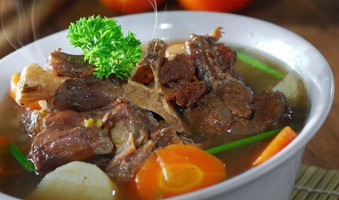Sup buntut adalah sajian berkuah yang sebenarnya tak hanya terdapat di Indonesia, melainkan di negara-negara Asia dan Eropa lain juga bisa ditemui, seperti Amerika Serikat Selatan, Cina, dan Korea. Sup buntut versi Indonesia merupakan makanan yang populer dan digemari banyak orang. Sop buntut ini juga termasuk makanan khas Indonesia Timur. Seperti namanya, sup buntut mengandung komposisi utama berupa ekor atau buntut sapi. Buntut sapi yang sudah dipotong-potong sebelum disajikan harus diolah terlebih dahulu pastinya. Proses pengolahan buntut sapi tidak terlalu rumit. Potongan buntut sapi diberi bumbu yang kemudian dibakar atau digoreng dan dilanjut dengan memasukkannya ke dalam kuah kaldu sapi yang bening bersama bahan lain seperti irisan wortel, tomat, kentang, daun bawang, seledri, dan taburan bawang goreng.
16. Lontong
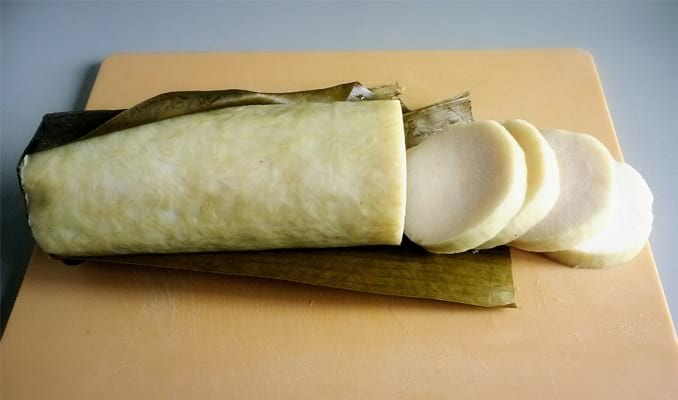Lontong adalah makanan khas Indonesia yang terbuat dari beras. Sekilas lontong mirip dengan nasi, tapi proses pembuatan lontong berbeda dengan cara memasak nasi. Lontong dibuat dengan cara membungkus beras ke dalam daun pisang untuk kemudian dikukus di dalam dandang berisikan air mendidih selama beberapa jam. Saat ini lontong ada yang tawar alias tanpa isi maupun lontong dengan isian, biasanya berisi kentang, ayam, dan oncom. Lontong yang tawar lebih banyak dimakan sebagai pengganti nasi, seperti untuk teman makan sate, rujak, gulai, dan di beberapa daerah di Indonesia kerap dijadikan teman makan hidangan khas daerah tersebut. Penduduk Indonesia biasa membuat lontong menjelang hari raya seperti Idul Fitri dan Idul Adha. Sementara di Jawa ada hari khusus bernama hari raya ketupat yang jatuh pada lima hari setelah hari raya Idul Fitri.
17. Ketupat
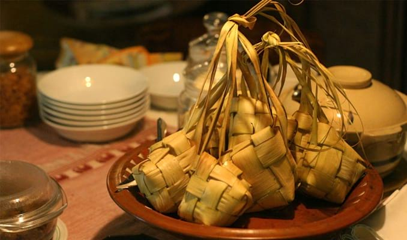Di Indonesia terdapat banyak olahan nasi dan bentuknya juga mirip-mirip. Seperti ketupat misalnya, makanan khas Indonesia yang terkenal di dunia ini mirip dengan lontong, lepet, ataupun burasa khas Makassar. Ketupat atau kupat juga merujuk pada makanan yang terbuat dari bahan dasar beras yang dibungkus. Jika sebelumnya ada lontong yang dibungkus dengan daun pisang, berbeda dengan ketupat yang dibungkus dengan anyaman daun kelapa muda atau janur sebutannya. Keberadaan ketupat juga tak jarang sebagai alternatif pengganti nasi. Ketupat biasa dijadikan sumber karbohidrat pengganti nasi untuk makanan berkuah di beberapa tempat, seperti kupat tahu (Magelang), katupat kandangan (Banjar), kupat glabet (Tegal), dan coto makassar. Meski rata-rata ketupat dimakan sebagai pendamping menu berkuah, ada juga hidangan semi-berkuah yang dimakan bersama ketupat, seperti lotek, gado-gado, dan ketoprak.
18. Rendang
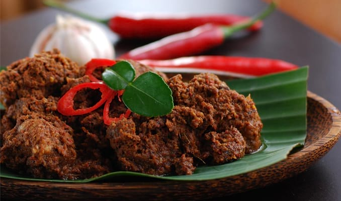Makanan khas Indonesia yang mendunia ini dimasukkan ke dalam daftar 50 Hidangan Terlezat Dunia atau 50 Most Delicious Foods ini. Secara normal, rendang akan dibuat dari daging sapi dengan rasa yang pedas, karena salah satu rempahnya adalah cabai. Namun lambat laun seiring perkembangan selera masyarakat, muncul aneka rendang yang tidak hanya dari daging sapi, karena telah ada rendang ayam, itik, hingga hati sapi. Untuk memasak rendang, waktu pembuatannya bisa berjam-jam, bisa dikatakan hampir 4 jam sampai benar-benar mengering. Untuk membuatnya juga memerlukan santan, dan santan inilah yang harus dimasak bersama daging dan rempah seperti cabai, kunyit, jahe, lengkuas, bawang merah, serai, bawang putih, dan renpah lain. Setelah mengering, baru rendang bisa disajikan, entah itu bersama dengan ketupat atau menjadi lauk dari nasi untuk dijadikan makanan utama. Sebagai makanan asli Padang, membuat rendang banyak disajikan di seluruh rumah makan Padang, bahkan di warung makan sederhana banyak pula yang menjualnya.
19. Tahu-Gejrot
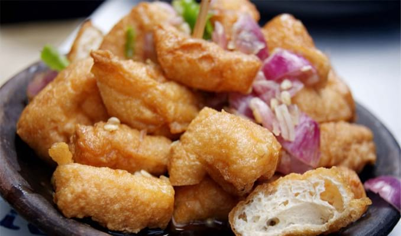Di Jawa Barat, khususnya daerah Cirebon yang sesungguhnya adalah daerah asalnya, ada makanan khas yang dinamakan dengan tahu gejrot. Sesuai dengan namanya, olahan ini dibuat menggunakan tahu, namun tahu yang dipakai bukanlah tahu-tahu yang selama ini kita kenal, namun tahu sumedang. Agak aneh memang, makanan dari Cirebon tapi bahannya dari Sumedang, namun ini menandakan adanya akulturasi kuliner antara daerah satu dengan daerah lain. Secara lengkap, tahu gejrot merupakan kuliner dari tahu sumedang dengan penyajiannya bersama dengan kuah pedas manisnya. Dalam pembuatan tahunya, sebelum digoreng harus direndam dulu dalam air garam, tentunya agar memberi kesan rasa asin gurih. Setalah selesai dimasak tahu tersebut akan dipotong kecil-kecil, dan akan diguyuri siraman sausnya, bahan saus tersebut adalah cabai merah, cabai hijau, cabai rawit, gula merah, bawang merah, air asam, dan kecap manis. Makanan yang memiliki rasa pedas manis ini bisa dengan mudah ditemukan di Cirebon, atau di kota-kota besar, seperti Jakarta, Bandung, hingga Malang.
20. Gorengan
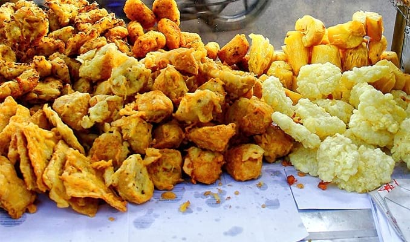Kalau gorengan, siapapun sudah tahu tentang penyebutan makanan ini, walaupun sebenarnya hampir ada di seluruh dunia, namun gorengan di Indonesia dibuat dengan balutan tepung yang digoreng. Banyak sekali varian gorengan yang biasa dijajakan sebagai makanan ini, sebut saja hasil alam Indonesia seperti ubi, pisang, sukun, hingga singkong. Ada juga tahu, tempe, dan oncom yang dimasak bersama tepung untuk dijadikan gorengan. Gorengan dengan bahan dasar tempe berbalut dengan tepung dan sayur, dinamakan mendowan, sedangkan temannya yaitu bakwan atau bala-bala, hanya dibuat dari tepung bersama sayur berbentuk bulat. Bahkan masih ada gorengan dengan nama perkedal yang dibuat dari kentang halus, dan khusus yang ini tanpa tepung. Untuk mendapatkan aneka gorengan, tidaklah sulit untuk ditemukan, di seluruh Indonesia sudah dipastikan ada penjualnya.
21. Nasi Pecel
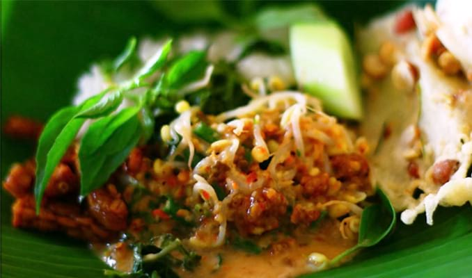Secara umum, pecel adalah makanan yang terbuat dari aneka sayur rebus dengan siraman bumbu kacang. Walaupun agak mirip dengan salad-nya orang Eropa, namun bedanya adalah penggunaan bumbu kacang, kalau di Eropa menggunakan mayyonaise. Boleh dibilang, pecel khas dari Jawa Timur, yaitu kota Madiun tepatnya, walaupun hampir di seluruh Nusantara ada banyak penjual pecel dengan variasi berbeda. Sayur yang biasa dipakai untuk dijadikan pecel adalah kacang panjang, tauge, bayam, daun turi, kemangi, krai, dan aneka sayuran lain. Untuk bumbu kacang hampir sama dengan bumbu-bumbu lain, bahan utamanya yaitu kacang panjang, cabai rawit, garam, bawang, asam jawa, dan jeruk purut. Semuanya harus dihaluskan dengan cara diuleg baru ditaburkan pada sayur rebus, sehingga akan menghasilkan rasa pedas khas dari pecel. Biasanya pecel akan disajikan dengan nasi dan dimakan dengan kerupuk, begitu pula dengan kebanyan variasi pecel, seperti di Madiun, Kediri, dan Tulung Agung.
22. Betutu
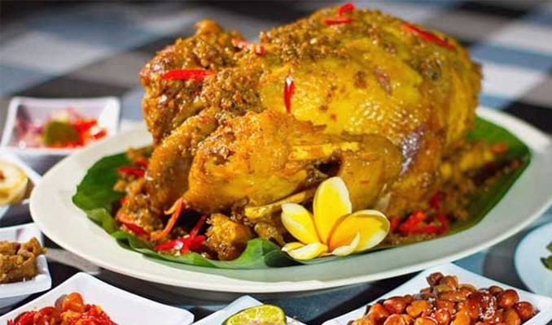Betutu merupakan sejenis cara pengolahan makanan dengan cara memanggangnya pada api sekam, biasanya yang dipakai adalah ayam dan bebek. Bahkan ayam dan bebek ini harus dipanggang dalam keadaan utuh, namun sebelumnya harus dibumbui dengan bumbu base genep khas Bali, karena di sanalah tempat asalnya. Uniknya lagi, hewan ternak tersebut juga akan diisi dengan daun singkong pada perutnya, termasuk base genep juga. Bahkan beberapa orang akan sebelum memanggangnya akan terlebih dahulu merebusnya, tujuannya agar tekstur daging bisa empuk saat nantinya dikonsumsi. Dengan kelebihan dagingnya yang empuk dan bumbunya meresap dengan sempurna, rasanya bila di Bali harus mencicipinya, khusunya di Gianyar yang menjadi sentra pembuatannya. Namun karena saking mudahnya ditemukan di restoran maupun hotel, maka saat ada di luar Gianyar-pun, kalian bisa mencobanya, salah satunya di Rumah Makan Ayam Betutu Pak Man, Badung.
23. Serabi
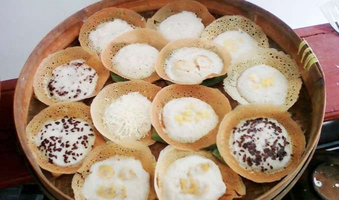Serabi atau surabi adalah kuliner tradisional dengan bahan dasar tepung beras berbentuk bulat, cara memasaknya adalah dengan menggunakan tungku. Secara sederhana, serabi akan terdapat dua variannya saja, yakni serabi manis yang dibalut dengan kinca atau gula merah cair. Lalu ada jenis lain berupa surabi asin, ini adalah versi originalnya, karena akan disajikan tanpa kuah maupun taburan apapun. Namun seiring dengan perkembangan zaman, muncul pula tambahan komposisi bahan, yakni dengan adanya telur kocok pada adonan surabi agar rasanya makin lezat. Belum lagi jika ditambah dengan aneka panganan modern layalnya potongan sosis, mayyonaise, dan keju sebagai topping-nya. Serabi ini kerap ditemui di Bandung dan kota-kota lain di sekitarnya, meliputi Bogor dan Jakarta, walaupun ada serabi lain bernama srabi solo dengan penyajian tanpa kuah.
24. Kolak
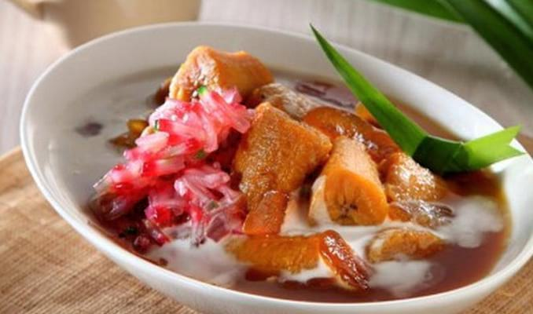Makanan dengan nama kolak merupakan olahan dengan bahan dasar potongan pisang atau ubi yang dimasak dengan cara direbus bersama santan dan gula jawa. Karena dimasaknya menggunakan santan, kolak nantinya akan memiliki kuah dengan rasa manis akibat penambahan gula jawa pada kuahnya. Panganan ini bahkan begitu melekat dengan umat Islam Indonesia karena kerap dijadikan takjil buka puasa, hal ini karena rasanya manis sesuai sunnah buka puasa. Untuk membuat kolak, bahan yang umum dipakai adalah pisang, sedangkan ubi adalah opsional, bahkan dijadikan sebagai campuran dari kolak pisang. Sedangkan pisang yang dipakai adalah pisang kepok agar rasa kolak berasa lebih manis dan lembut di mulut. Untuk bisa mendapatkan kolak begitu mudah, khususnya ketika bulan Ramadhan maupun bulan Sya’ban, karena saat itu banyak penjualnya menjamur di tepi kota.
25. Lemang
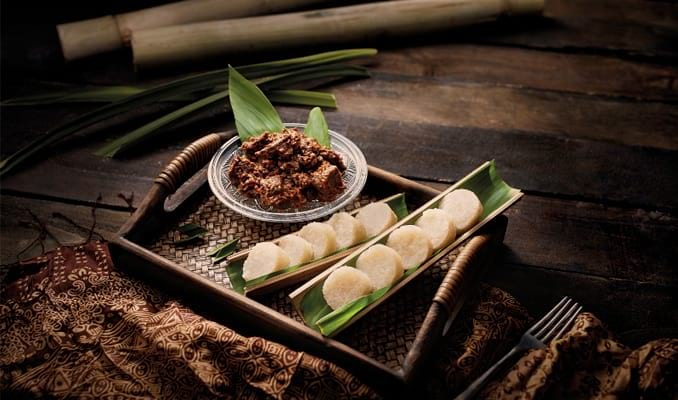Sebagai makanan yang dibuat oleh Bangsa Melayu, tak ayal bila lemang dengan mudah ditemukan di Indonesia, Brunei, Malaysia, dan Singapura. Namun lemangnya Indonesia akan dibuat menggunakan beras ketan bercampur dengan santan dari kelapa untuk nantinya dimasukkan ke dalam daun pisang sebelum nanti masuk lagi ke bambu. Setelah semua siap, lemang akan dibuat dengan cara memanggangnya dengan medium bambu tersebut sampai bambunya agak gosong sebagai tanda lemang matang. Dengan kandungan karbohidrat pada beras ketan, lemang bisa dijadikan sebagai makanan utama untuk seterusnya dimakan manis atau gurih. Bila ingin manis, biasanya akan disajikan dengan kinca atau selai, sedangkan untuk yang asin gurih, bisa dimakan secara langsung mapun dimakan bersama rendang. Untuk mendapatkannya, di daerah Minangkabau khusunya Tebing Tinggi banyak sekali penjualnya, khusus untuk Tebing Tinggi, dia dijuluki dengan Kota Lemang.
26. Batagor
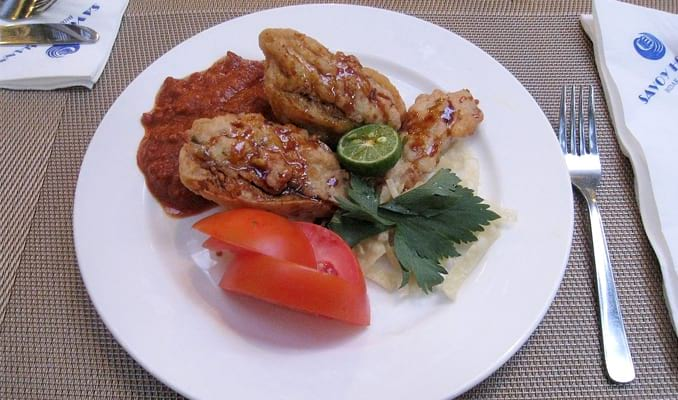Penamaan batagor sebenarnya adalah akronim dari baso tahu goreng sesuai dengan variasi isian pada makanan ini. Untuk membuat batagor, bahan utamanya adalah tepung sagu, yang nantinya akan dimasukkan pada kulit pangsit untuk digoreng garing. Sedangkan untuk penyajiannya, kumpulan baso-basoan tersebut akan disajikan bersama dengan bumbu kacang, biasanya juga akan ditambah dengan potongan tahu putih sebagai di sekitarnya. Bumbu kacang sebagi media utama untuk menciptakan rasa pedas gurih pada batagor akan dibuat menggunakan kecap manis, gula, garam, bawang putih, cabai, dan perasan jeruk nipis. Bahan-bahan tersebut akan dihaluskan untuk disiramkan di atas batagor tersebut. Karena makanan ini adalah makanan Bandung, sehingga akan dengan sangat mudah dijumpai di sana, walaupun banyak kota-kota lain yang menyediakannya.
27. Kerak Telor
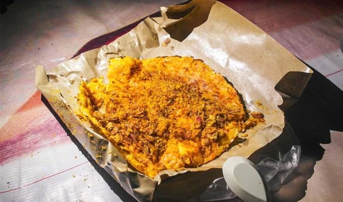Kudapan ini adalah asli dari Betawi, sehingga bisa dipastikan menjadi makanan khas orang Jakarta. Aktor utama dalam pembuatannya adalah penggunaan beras ketan, yang nantinya akan dicampur dengan bahan-bahan lain, khususnya telur. Dari salah satu bahan tersebut, kita tahu bahwa penamaan kerak telur adalah karena adanya telur, sedangkan adanya tambahan kerak dalah dikarenakan nantinya beras ketan dan kawan-kawan akan dimasak sampai menjadi kerak. Secara lengkap, kerak telur akan dimasak dengan beras ketan, lalu akan diisi dengan telur, jahe dan kencur halus, gula pasir, garam, ebi, dan bawang goreng yang dikocok. Nantinya harus dimasak dengan arang agar panasnya merata, sedangkan bila dimasak dengan kompor maka hasilnya bukan kerak, tapi akan menjadi gosong. Rasa kerak telur ini sungguh legit nan gurih, sehingga harus dicicipi, apalagi ini merupakan makanan tradisioanl Ibukota Indonesia yang semakin sulit ditemui.
28. Kerupuk
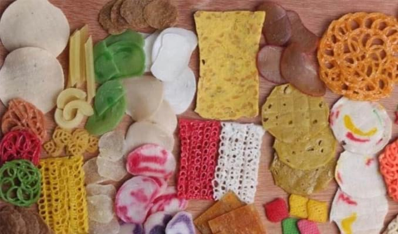Umumnya, kerupuk akan dibuat menggunakan tepung tapioka dengan tambahan perasa makanan, entah itu dari udang atau ikan. Walaupun sebenarnya ada yang tidak menggunakan udang, ikan, atau perasa lain. Di Indonesia telah tersebar aneka kerupuk, pembuatannya hanyalah dengan mencampur setiap bahan yang nanti akan dikeringkan dengan sinar matahari, baru digoreng. Bentuknya beragam, namun satu hal yang pasti dari kerupuk adalah rasanya renyah, dan bentuknya tidak terlalu besar. Jenis-jenis kerupuk adalah antara lain, kerupuk udang dengan rasa udangnya yang kuat, dan juga ada kerupuk bawang, kerupik ikan, dan kerupuk ceker ayam. Sedangkan variasi lain dari kerupuk adalah kerupuk mlarat, karena pembuatannya menggunakan perasa hanya dari garam, dan penggorengannya unik, karena memakai pasir. Sedangkan jenis kerupuk paling terkenal adalah kemplang, jenis tersebut dapat diperoleh di Palembang dengan rasa ikannya yang khas dan kerupuk lainnya adalah kerupuk jangek (kulit) dengan bahan pembuatannya malah dari kulit kambing atau sapi.
29. Gulai Kambing
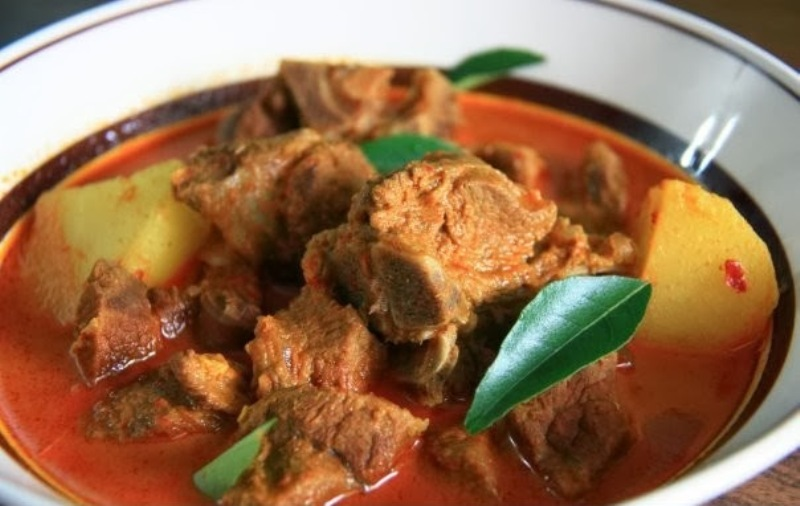Ciri khas utama dari kuliner dari Pulau Sumatera adalah bumbu rempah yang berpadu dengan kuah santannya. Sama seperti menu yang satu ini nih, gulai kambing. Gulai kambing Aceh ini bumbunya benar-benar memanjakan lidah semua orang yang menyantapnya. Gulai kambing Aceh punya kuah yang cukup kental. Rasa kuahnya cukup tajam terasa rempah-rempah khas Aceh yang dicampur dengan bumbu cabe rawit tumbuk dan jeruk nipis. Sedangkan isinya adalah daging kambing cincang yang telah direbus hingga halus.
30. Mie Aceh
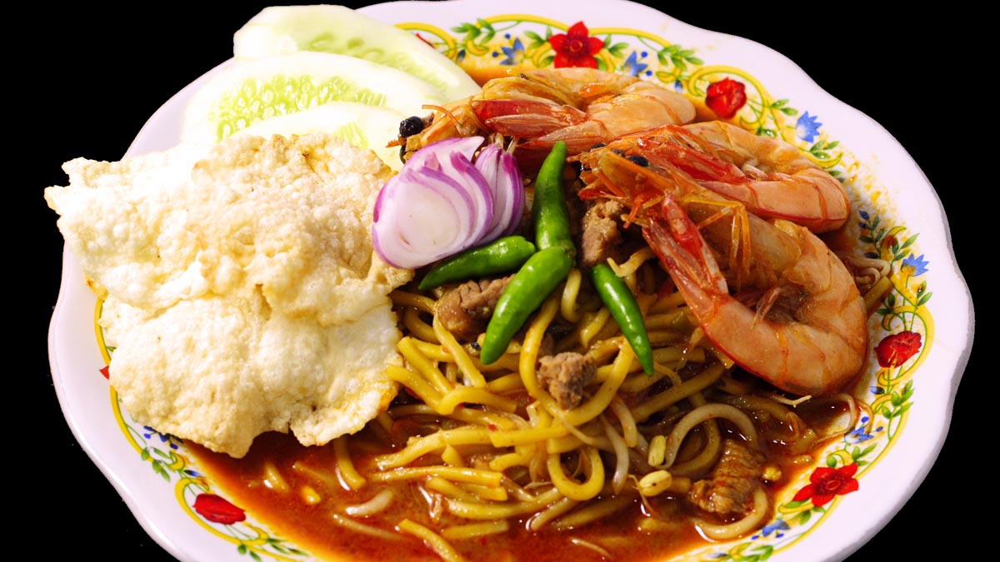Mie Aceh, satu jenis kuliner yang menggoda dari Aceh, dapat dicicipi dengan dua cara, yakni di goreng atau direbus alias menggunakan kuah. Untuk rasa bisa memilih sendiri, apakah ingin pedas atau tidak. Sebagai variasi bisa meggunakan kepiting, daging atau seafood. Variasi inilah yang nanti menentukan nama mienya.
31. Sate Matang
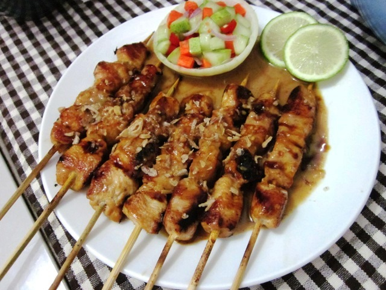Sate matang sudah bergema di setiap kota seluruh Aceh, medan bahkan Jakarta. Di mana ada masyarakat Aceh bermukim di kota-kota besar di Indonesia. Pasti ada gerobak yang bertulis sate “sate matang” . Dinamakan sate matang karena asalnya dari daerah Matang, Bireuen. Yang bikin special sate ini karena makanya dengan kuah soto. Di Banda Aceh, banyak warung yang menyediakan makanan ini, salah satunya adalah di Rex Peunanyong.
32.Kuah Pliek U
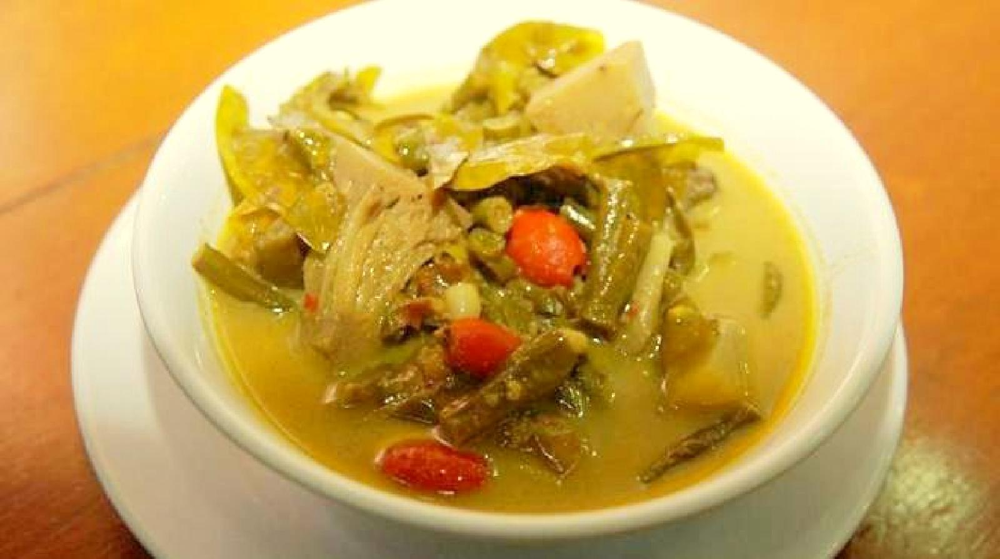Kuah Pliek 'U adalah makan aceh yang sangat populer dengan campuran berbagai rasa dan kaya akan vitamin serta zat-zat yang bisa meningkatkan gairah dan kekebalan tubuh. Selain itu juga Kuah Pliek 'U juga merupakan makanan yang melambangkan kekerabatan dan keanekaragaman dalam masyarakat Aceh yang dapat disatukan dalam satu kuali, sehingga mengasilkan rasa yang unik dan digemari oleh seluruh masyarakat di luruh dunia. kuah Pliek 'U juga merupakan media memperkenalkan hasil alam Aceh yang begitu kaya akan jenis sayurnya sehingga dengan menyantap kuah Piek 'U berarti kita telah menyantap seluruh sayuran yang ada di Aceh. Masakan ini wajib dimakan, karena pergi ke Aceh tanpa makan Kuah Pliek 'U, sama seperti belum pergi ke Aceh. Masakan ini sangat mudah didapatkan, 90% rumah makan di Aceh pasti menyediakan Kuah Pliek 'U.
33. Kopi Aceh
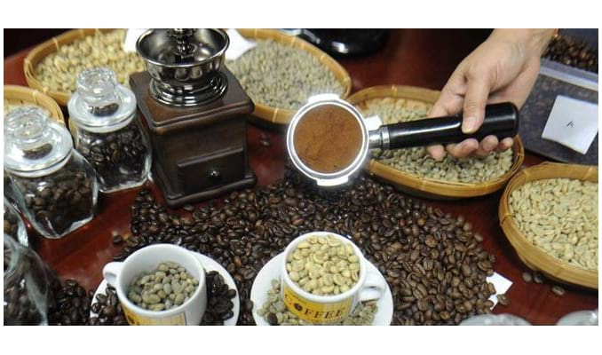Jangan mengaku pecandu kopi jika belum pernah merasakan nikmat dan kedahsyatannya kopi Aceh. Aceh dari dulu memang terkenal sebagai salah satu penghasil kopi terbesar di Indonesia, dengan cita rasanya yang khas dan aroma yang kuat, seperti kopi Aceh Gayo. Kopi Aceh pada dasarnya sama dengan kopi-kopi pada umumnya. Namun, karena cara penyajiannya yang agak berbeda, kopi Aceh memiliki perbedaan rasa malah di dalamnya terdapat kandungan antitoksin, menambah stamina tubuh dan dapat mengencangkan kulit. Kopi aceh sangat spesial rasanya karena Anda tidak akan menemukan kopi senikmat kopi aceh di daerah manapun di Indonesia. Hal menarik saat menikmati kopi di Aceh adalah dengan bersantai dan bercanda dengan teman-teman dan kerabat. Menikmati kopi di Aceh adalah pengalaman yang unik dan langka.
34. Pendap
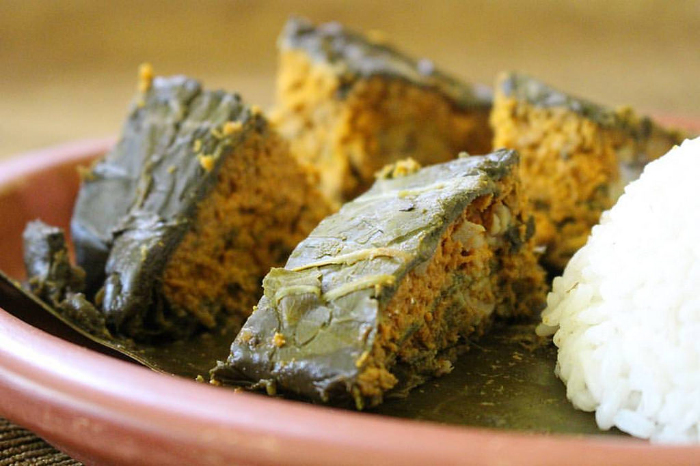Pendap merupakan salah satu masakan khas Indonesia dari daerah Bengkulu. Makanan ini kerap diburu wisatawan sebagai oleh-oleh untuk dibawa pulang ke asal mereka, apalagi saat musim Lebaran tiba. Pendap terbuat dari bumbu-bumbu yang beraneka ragam seperti bawang putih, kencur serta cabai giling. Kemudian bahan-bahan tersebut dicampur merata dengan parutan kelapa muda. Meskipun Pendap adalah salah satu kuliner khas Bengkulu, namun pamornya ternyata tidak hanya di Bengkulu tetapi juga diberbagai daerah lainnya seperti Jakarta, Lampung, Palembang, Pangkal Pinang, dan Jambi. Ketika masak dan dibuka bungkusnya, makanan tersebut seluruh permukaannya terlihat berwarna hijau tua karena balutan daun talas namun teksturnya lembut. Pendap memiliki rasa pedas dan gurih. Pendap dijadikan lauk makan nasi yang bisa meningkatkan selera makan.
35. Bandeng Presto
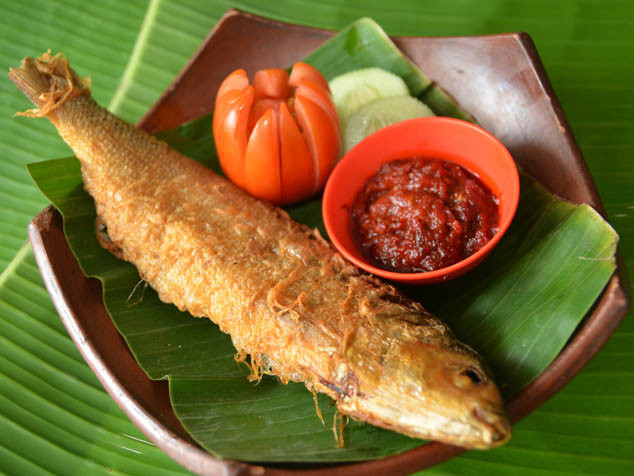Bandeng Presto adalah ikan bandeng yang dimasak dengan panci bertekanan tinggi biasanya disebut presto. Cara ini dilakukan untuk membuat duri ikan bandeng tersebut menjadi lunak sehingga enak untuk dimakan dan tahan lama jika di simpan dalam lemari es. Biasanya di hidangkan dengan sambal terasi dan nasi hangat. Jika kebetulan anda sedang berpergian ke Semarang dan ingin merasakan bandeng presto dari daerah asalnya, silahkan mampir di salah satu toko yang berderet di sepanjang Jalan Pandanaran atau Mataram Semarang.